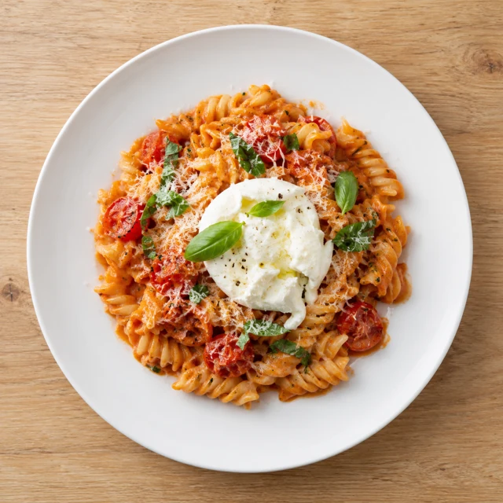
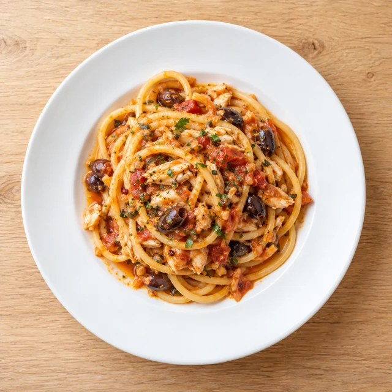
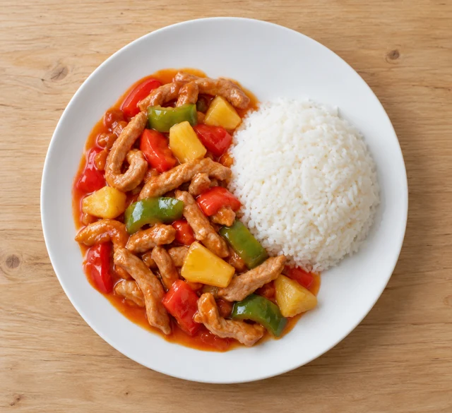
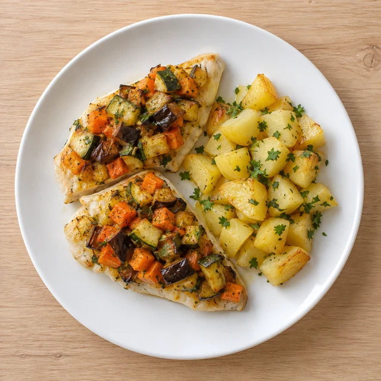
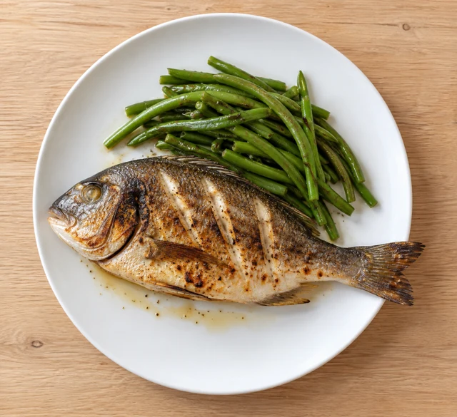

Fusilli con crema di pomodorini, burrata e parmigiano al profumo di basilico

Crema di pomodorini, morbida burrata e parmigiano, con il profumo del basilico.
0107
Valido solo a pranzo,
nel giorno sotto indicato

Crema di pomodorini, morbida burrata e parmigiano, con il profumo del basilico.
0107

Orata e olive in un sugo dal delicato tocco piccante.
0104

Patate e salsiccia avvolte dalle note aromatiche dello zafferano.
01

Ananas, peperoni e pomodoro in una salsa agrodolce, con riso bianco al vapore.

Zucchine, carote e melanzane in una crosta di verdure, con patate tiepide al prezzemolo.
04

Orata alla griglia, accompagnata da fagiolini saltati in padella.
04
Attendere la conferma del Ristorante per considerare valido l’ordine.
Immagini illustrative dei piatti: fotografie di riferimento e immagini generate con intelligenza artificiale. Impiattamento e presentazione possono variare.